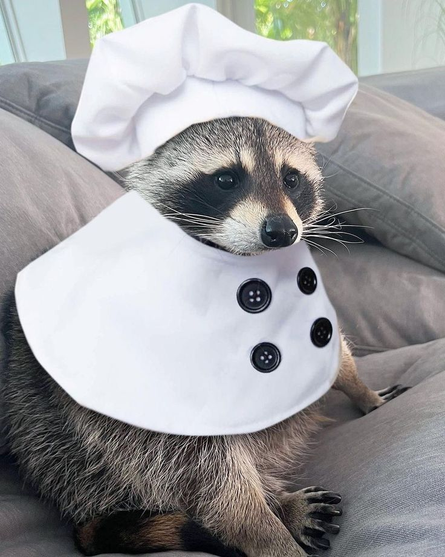

Guess the raccoon !
Can you guess the name of this raccoon????
Guess
Who's this raccie? :00

He's adorable !!!
He likes to cook :0
He dresses up like a chefie!
He is the youngest raccie!!
Another hint:
He's very calm ^^